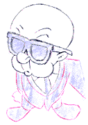
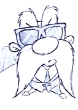

During the big game, Elmer Fudd and Yosemite Sam get together for a brief homage to Quentin Tarantino. Here are some of the preliminary sketches of the sequence:
Yosemite looks at Elmer... ...Elmer looks back at Yosemite.  Yosemite sights his target...  ...and Elmer Fudd does the same. The wide-angle view of the gun barrels
is drawn separately.The sketches are composited with the computer-generated
basketball court to complete the shot.
© 1996 Warner Bros.